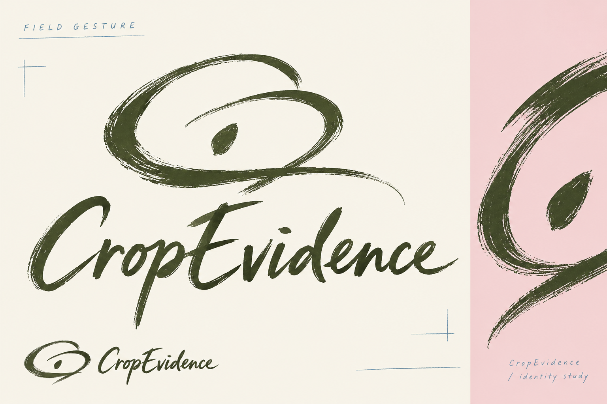
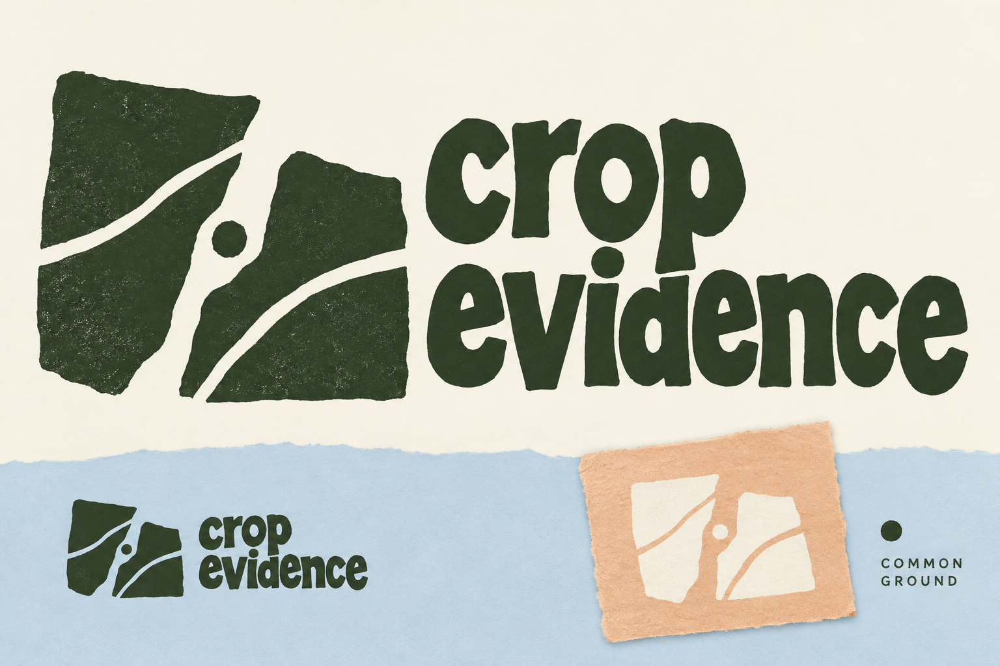
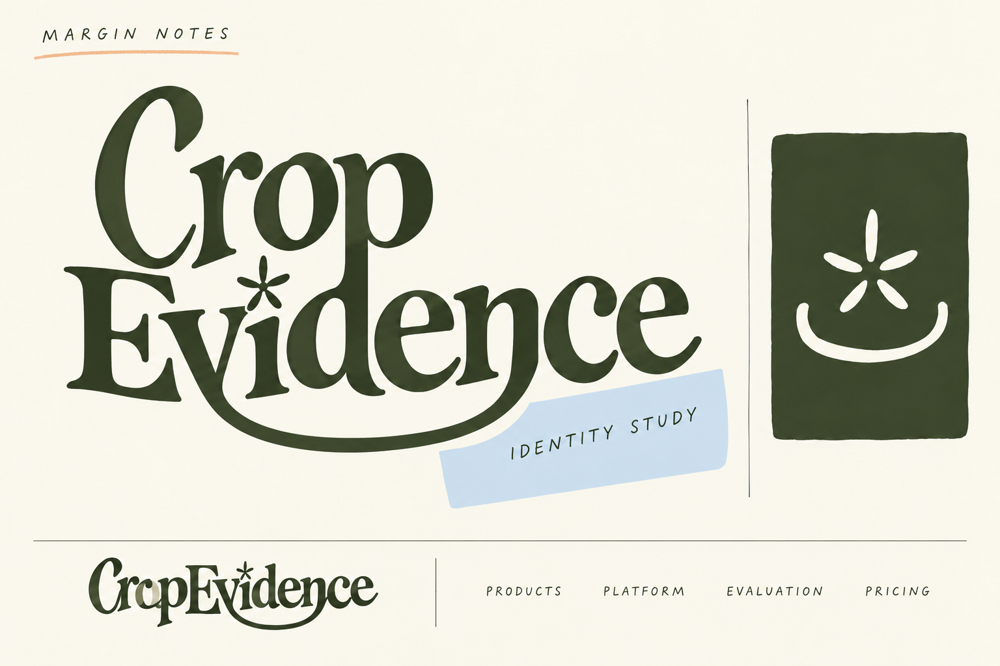

CropEvidence / round 3
A freer hand.
A stronger personality.
Three original studies exploring brush gesture, cut-paper printmaking and expressive custom lettering. The website references remain unchanged; these are identity explorations.
Option 1

Option 2

Option 3

What informed the exploration
Research used the configured Perplexity high research preset and primary design-studio/museum sources. LenLen and Garden Museum were also inspected visually in the browser. The principles below informed original constructions; no source logo was reproduced.
- Pentagram — LenLen: handmade lettering, spontaneous illustration and collage suggest that deliberate irregularity can create a coherent identity.
- Pentagram — Garden Museum: imperfect abstract organic shapes can build a broader graphic language without relying on literal botanical icons.
- MoMA — Matisse: The Cut-Outs: cut-paper construction offers economical silhouettes and active negative space. This informed a process, not a copied motif.
- COLLINS — sweetgreen: custom typography and illustration can give an agricultural subject a more contemporary identity. Researched through the case-study synthesis.
- Natural History Museum — Nature on our doorstep: botanical observation and annotation informed the field-notebook presentation. Researched through the museum source synthesis.
These are raster creative studies. The strongest candidate will need simplified vector construction, consistent repeated lettering and small-size testing. The brush texture in option 1 and print texture in option 2 require cleaner small-format versions. Option 3 shown here is the refined version with incidental promotional text removed.
Created with built-in image generation. Exact generation and refinement prompts. Previous round.